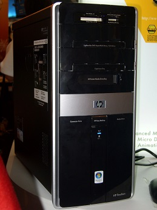

Chassi
Chassit är själva datorlådan som är ett tomt skal där alla komponenter ska monteras. Här bör man vara medveten om att det finns olika storlekar på ett chassi, det kallas för formfaktorn i datorsammanhang. Den vanligaste formfaktorn kallas för ATX, vilket är lagom för en normalstor låda.